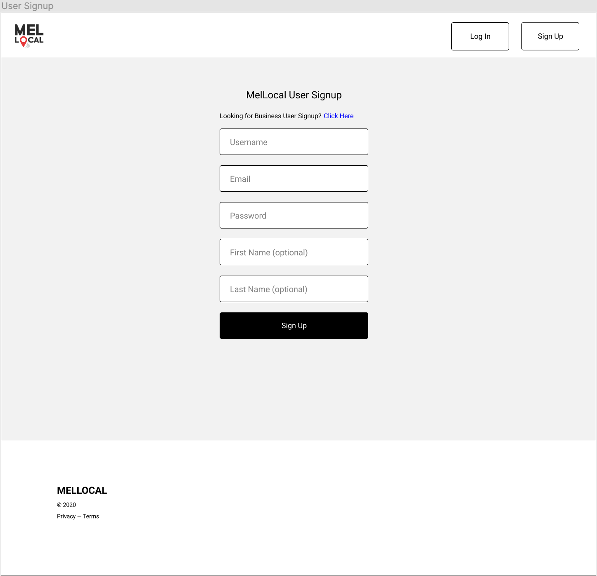
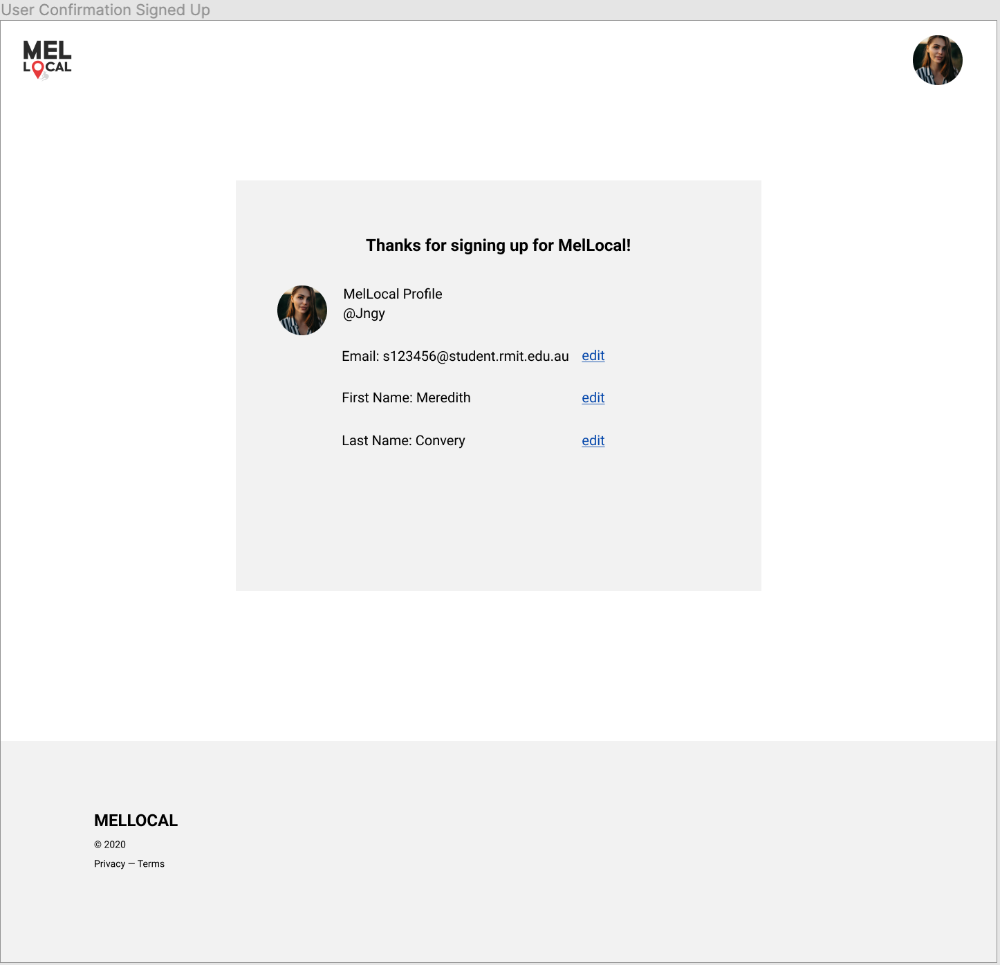
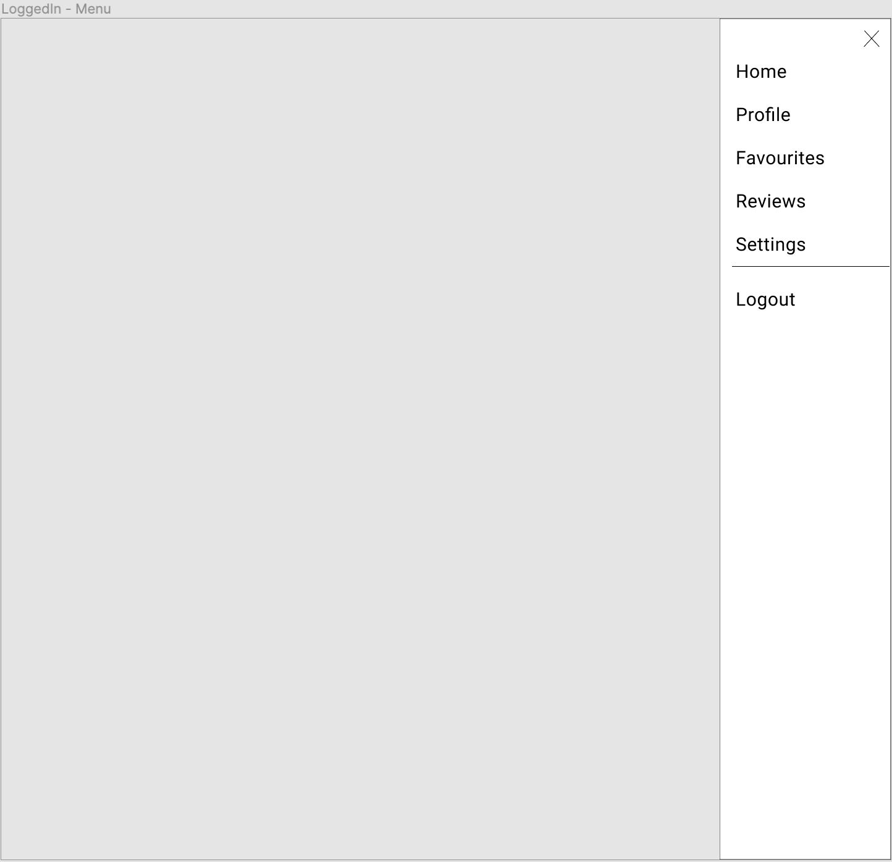
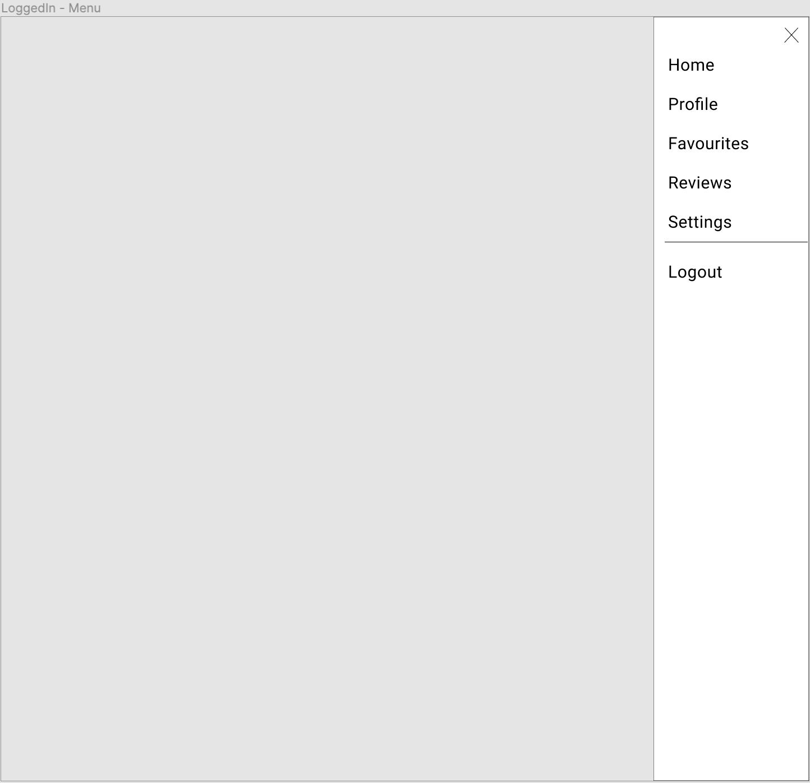
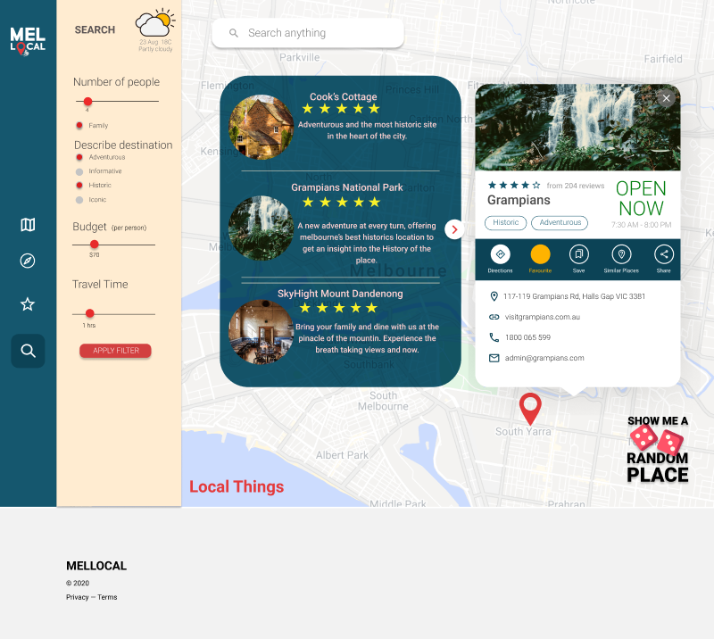

Design & Architecture
MVF 1: Review System
Users can click on the review stars to open the business review comment form.
MVF 2: Displaying Cost Information
Cost information can be accessed from the single location summary view.
MVF 3: Business Advertisement
Businesses are required to input information to be displayed to MelLocal users.
They are then given a preview of how their business will appear on the map.
MVF 4: Creation of User Profile Account
Users are also required to signup to access map search features.
 

Similar to business users, once they are logged in they will be able to access the slide out menu on the right by clicking on their profile picture.

They will also be able to save places to their favourites.
MVF 5: Ability to Search Experiences
From the map page, users can use the input text box to search a string. Their results appear in a container.
Users can click on an individual location for a more detailed summary.